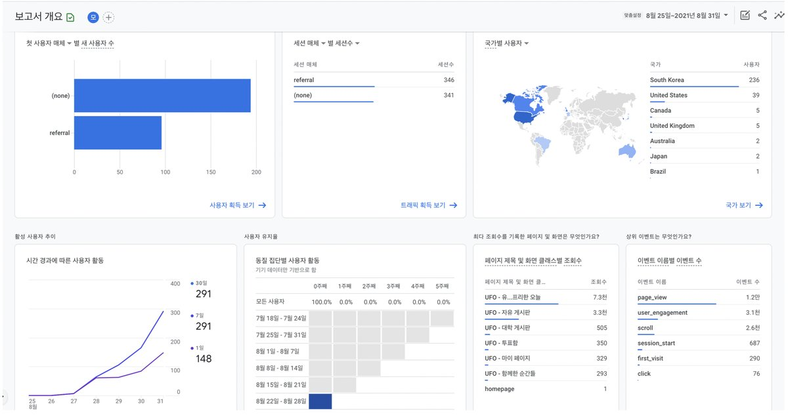
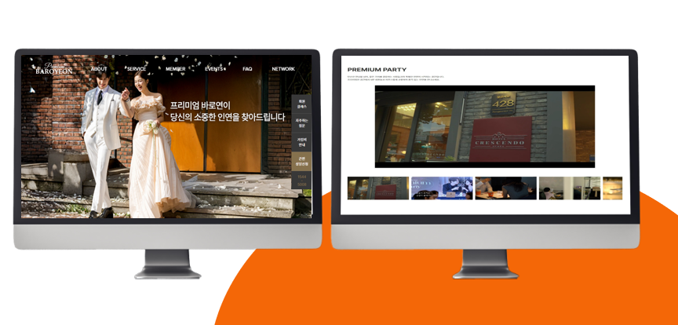
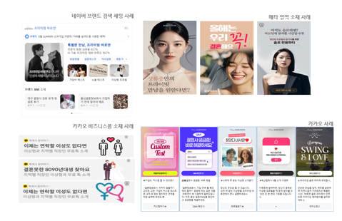
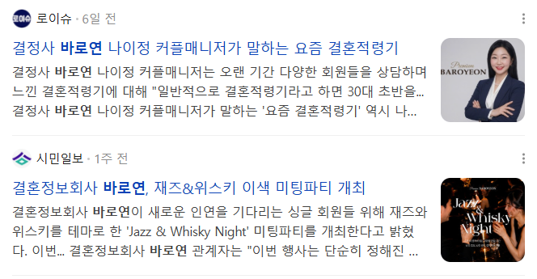

안녕하세요,
마케터 이재열
입니다.
데이터로 원인을 진단하고 콘텐츠로 흐름을 만드는 약 10년 차 통합 마케팅 스페셜리스트. 시장 분석부터 캠페인 기획, 데이터 분석까지 전체 퍼널을 직접 운영합니다.

퍼포먼스 · 바이럴 · CRM
18만원 → 7만원 (바로연)
랜딩 · 소재 · 매체 최적화
기획 · 개발 · 배포 · 운영
짧은 프로필
매체 단위가 아니라, 고객 여정과 문제 해결 단위로 마케팅을 봅니다.
10년 가까운 시간 동안 바이럴 · 퍼포먼스 · CRM을 넘나들며 타겟 고객층을 파악하고, 지표 하락의 원인을 진단하고, 실행으로 결과를 만드는 과정을 반복해왔습니다.

매체 운영부터 데이터 분석, 개발, AI 활용까지 실무에서 직접 사용했습니다.
이력서·포트폴리오 상세본, 캠페인 로우데이터까지 언제든 공유드릴 수 있습니다.
최근 프로젝트 일부
플랫폼과 매칭 서비스라는 다른 환경에서, 공통적으로 문제를 보고 다음 액션을 설계해왔습니다.

CRM과 퍼포먼스를 연결하고, 유기적 트래픽까지 한 흐름으로 관리했습니다.
유입 채널·행동 데이터로 고객군을 나누고, 맥락별 메시지를 설계해 재방문·전환을 추적했습니다.
메타 태그·사이트맵·구조화 데이터를 개선하고 GitHub 웹문서로 노출 영역을 확대했습니다.

광고·콘텐츠·홈페이지·행사·제휴까지 브랜드 접점을 직접 운영했습니다.
SA·DA 매체 운영, 랜딩·소재 기획, 대행사 관리와 A/B 테스트로 전환율을 개선했습니다.
ASP 코드를 React + Express로 전환하고, DB 입력 페이지에 카카오 싱크를 도입했습니다.
SNS KPI 120% 초과 달성, 준메가 인플루언서 15명 확보, 제휴로 연 매출 8천만원을 만들었습니다.



'어라운드툴'은 실무 마케팅 지식으로 주제를 기획하고, AI와 함께 콘텐츠 설계 · 코드 작성 · 배포 · 데이터 분석까지 전 과정을 직접 진행한 생활 계산기 플랫폼입니다.
저의 역량
한 역할에 머물지 않고, 퍼널 전체를 직접 만지며 쌓은 네 가지 축입니다.
메타 · 카카오 · 네이버 · 구글 주요 매체를 직접 운영하며 ROAS/CPA를 최적화합니다.
GA4 · 에어브릿지로 유입/이탈/전환 경로를 분석하고 세그먼트별 타겟을 최적화합니다.
포털 생태계를 바탕으로 검색 노출과 콘텐츠 전략을 연결해 자연 유입을 확대합니다.
지표를 추적해 이슈를 진단하고, 가설-실행-검증에 생성형 AI를 결합해 속도를 높입니다.
경력 여정
약 10년간 B2C 플랫폼 · 매칭 서비스 산업에서 퍼포먼스와 바이럴 마케팅을 운영해 왔습니다.
SA/DA 매체 운영, 홈페이지 리뉴얼, 콘텐츠·브랜딩·채널 확장까지 온·오프라인 통합 마케팅을 담당합니다. SA 전환단가를 18만원에서 7만원으로 낮추고 월 신규 DB를 1,000건 이상 늘렸습니다.
CRM 및 퍼포먼스 고도화, 유기적 트래픽 확대를 담당하며 데이터 기반 운영 체계를 구축했습니다. 저효율 매체 예산을 조정하고 고효율 영역에 집중하는 운영 기준을 확보했습니다.
네이버 · 다음 키워드 상위노출을 기반으로 브랜드 인지도를 구축했습니다.
바이럴 · 퍼포먼스 마케팅을 병행 운영했습니다.
유입부터 전환까지, 감이 아닌 데이터와 실행으로 증명하는 마케터입니다. 어떤 문제를 풀고 계신지 편하게 들려주세요.